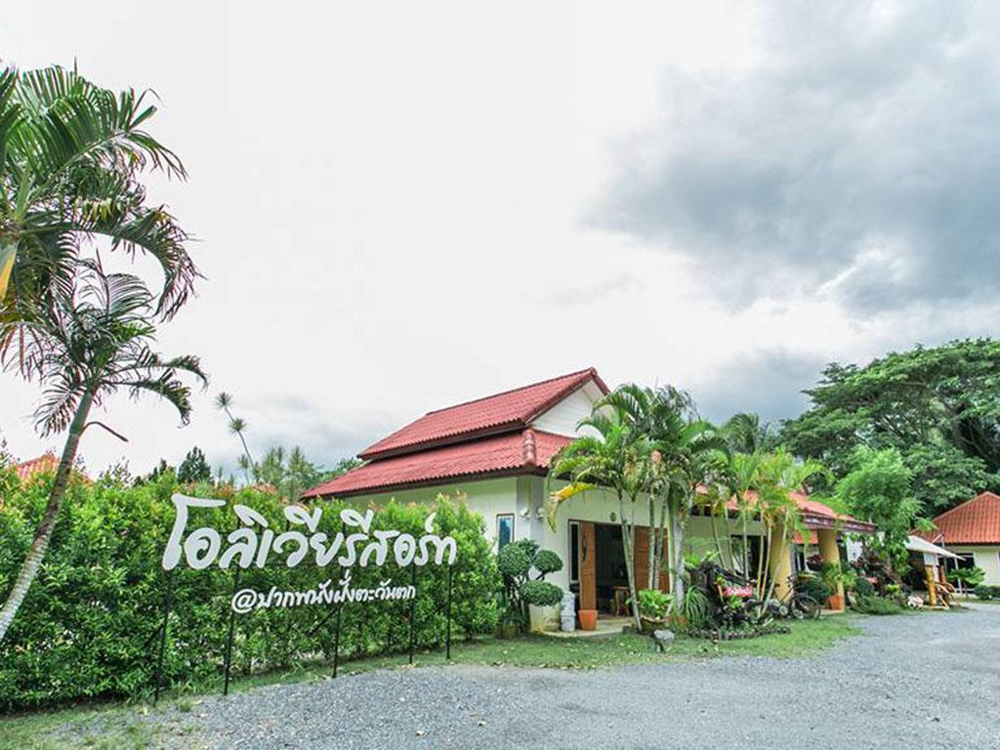
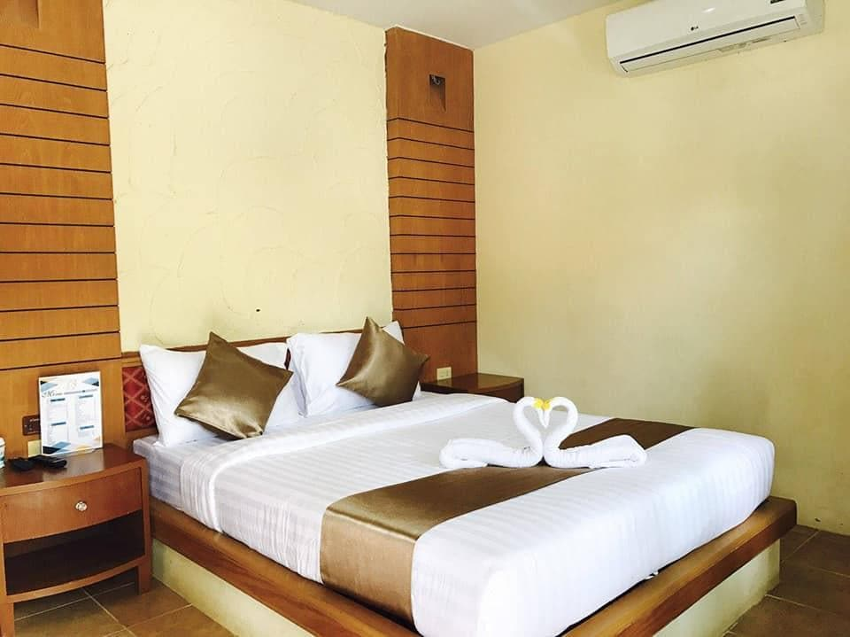
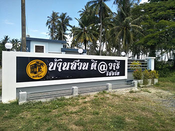

รีสอร์ท
1. โอลิเวีย รีสอร์ท

รูปภาพจาก : gplace
ที่พักตั้งอยู่ในย่านปากพนังของนครศรีธรรมราช ผู้เข้าพักจึงได้อยู่ใกล้สถานที่ท่องเที่ยวน่าสนใจและร้านอาหารอร่อยๆ ทริปยังไม่จบถ้าไม่ได้แวะไปที่เที่ยวชื่อดังอย่าง สนามบินนครศรีธรรมราช ด้วยอีกสักที่ ที่พัก 3 ดาวนี้มีสิ่งอำนวยความสะดวกที่จะช่วยเพิ่มความผ่อนคลายสูงสุดให้แก่ผู้เข้าพัก

รูปภาพจาก : agoda
โอลิเวียรีสอร์ต เป็นโรงแรมระดับ 3.0 ดาวที่ตั้งอยู่ในเมือง นครศรีธรรมราช ในประเทศไทย โรงแรมนี้มีห้องพักจำนวน 30 ห้อง ซึ่งสามารถเช็คอินได้ตั้งแต่เวลา 01:00 น. เป็นต้นไป และเช็คเอาท์ได้ถึงเวลา 12:00 น. นอกจากนี้ โรงแรมยินดีต้อนรับเด็กอายุ 3-12 ปีให้พักผ่อนฟรี โดยไม่มีค่าใช้จ่ายเพิ่มเติม
สนามบิน
สนามบินนครศรีธรรมราช (NST) 33.4 กม.
สนามบินตรัง (TST) 111.5 กม.
GOOGLE MAP : https://maps.app.goo.gl/H8VzEXooeSB46p6F9
2.ปากพนัง วิลเลจ
่
รูปภาพจาก : agoda
.....ที่พักให้บริการที่จอดรถฟรีเพื่อการเดินทางเข้าออกที่พักได้อย่างสะดวกสบาย รวมถึง Wi-Fi ฟรีให้ท่องเน็ตได้ทุกเมื่อ ที่พักตั้งอยู่ในย่านปากพนังของนครศรีธรรมราช ผู้เข้าพักจึงได้อยู่ใกล้สถานที่ท่องเที่ยวน่าสนใจและร้านอาหารอร่อยๆ ทริปยังไม่จบถ้าไม่ได้แวะไปที่เที่ยวชื่อดังอย่าง สนามบินนครศรีธรรมราช ด้วยอีกสักที

รูปภาพจาก : choowap
ปากพนังวิลเลจ เป็นโรงแรมระดับ 2 ดาวที่ตั้งอยู่ในจังหวัด นครศรีธรรมราช โรงแรมมีสิ่งอำนวยความสะดวกต่างๆ ที่จะทำให้การเข้าพักของคุณเป็นที่ประทับใจ ซึ่งรวมถึงการทัวร์, บริการพนักงานต้อนรับและช่วยเหลือ, Wi-Fi ในพื้นที่สาธารณะ, ที่จอดรถ, Wi-Fi ฟรีในทุกห้องพัก, บริการเช็คอิน/เช็คเอาท์ด่วน, การทำความสะอาดห้องพักประจำวัน, ที่จอดรถในสถานที่, และที่จอด
สนามบิน
สนามบินนครศรีธรรมราช (NST) 34.3 กม.
สนามบินตรัง (TST) 114.2 กม.
GOOGLE MAP : https://maps.app.goo.gl/MG6UUzB2yjLcEFzS6
3.บ้านสวน ดี@วารี

รูปภาพจาก : thai-tour
.....บ้านสวนดี วารี รีสอร์ท (Baan Suan Dee Varee Resort) ที่พักราคาถูก ใน ปากพนัง นครศรีธรรมราช อยู่ใกล้ทางหลวงหมายเลข 4013 ห่างจากที่ว่าการอำเภอปากพนัง เพียง 3.8 กม. เดินทางเข้า-ออกสะดวก รายล้อมด้วยบรรยากาศส่วนตัว น่าพักผ่อน
รูปภาพจาก : choowap
บริการห้องพักสะดวกสบาย ภายในห้องมี เครื่องปรับอากาศ ตู้เย็น ทีวี ตู้เสื้อผ้า พร้อมห้องน้ำส่วนตัวในห้องพัก
สิ่งอำนวยความสะดวกของเราประกอบด้วย ฟรีไวไฟ พนักงานต้อนรับส่วนหน้า ที่จอดรถ แม่บ้านประจำวัน และอื่นๆ
ราคาเริ่มต้นที่คืนล่ะ950บาท
GOOGLE MAP : https://maps.app.goo.gl/ui5soqyy4ydA2LhV9